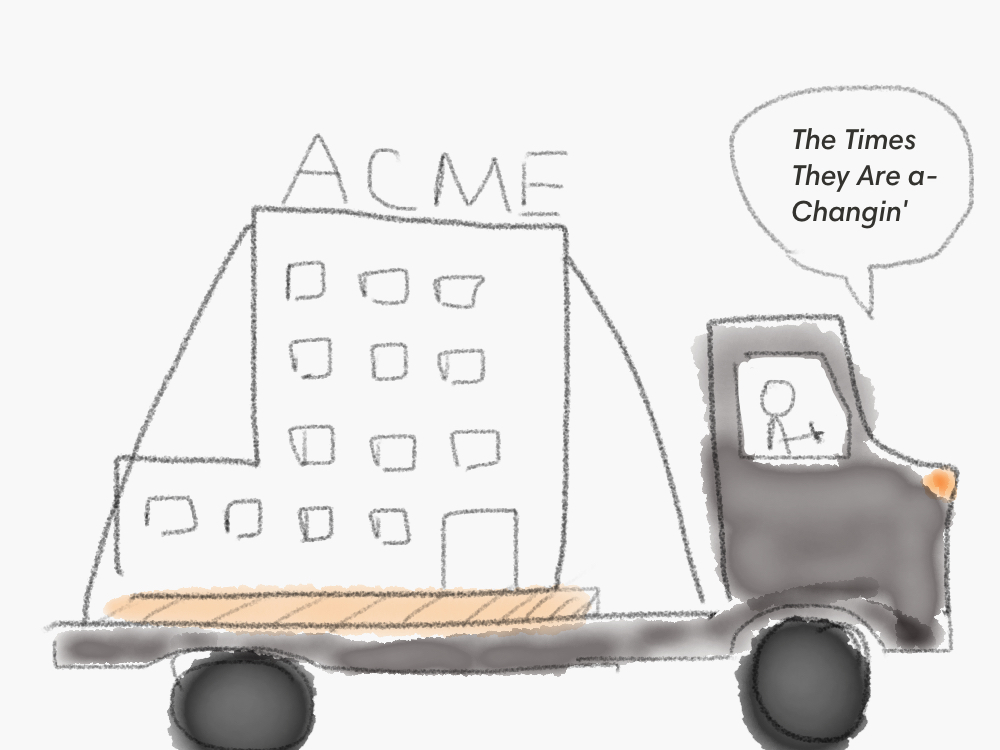
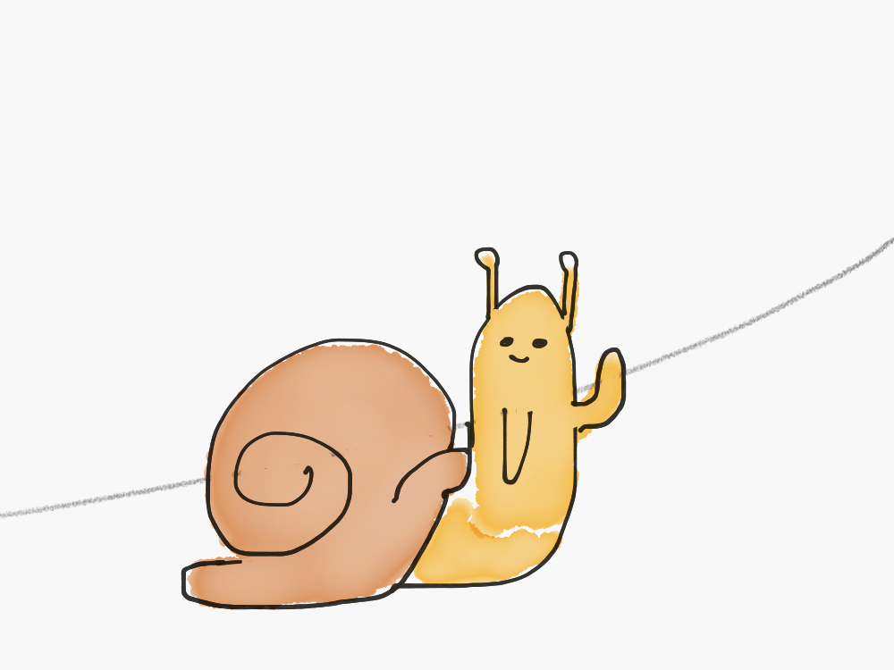

All articles tagged "engagement"

There is an annual tradition that so many of us religiously follow. It happens around the end of December, somewhere in-between Christmas trees, turkey and family gatherings. You take a piece of paper and reflect on the past year. What went well. What could’ve been better. Suddenly an epiphany hits you. You’re not satisfied with […]

If I asked you to take a good look at everyday objects around you and think of ones that don’t work and can’t be rationally explained why they are like that, what would come to your mind? I know I’ll certainly think about medicine instruction leaflets. You know a fold-in paper that goes in a […]

It was a hot August day in Cyprus. I was outside, eating a local candy. One of those middle eastern sweets that melt in your mouth. It was delicious, but every time I took a bite, several crumbs dropped to the ground. Just minutes later dozens of ants surrounded those pieces and started doing something […]

I was 13 when it happened. I was standing in a stadium, near the finish line, my head down, looking at people congratulating the guy who was first. I always loved running. 100m, 400m, 5km, 10km you name it. It was easy. It was natural. I was natural. I was nervous on the day of […]

Look at your body. Notice every pore and every hair, pay attention to every curve. Now, zoom in. Imagine passing through your skin and seeing what’s underneath. Blood running through the veins, your bones, your digestive system, your beating heart. Zoom even deeper. Zoom to the smallest cells. Each of those cells has its purpose. […]
Imagine yourself lost in the wilderness. Nobody around. No signs of where you need to get to. You are roaming, choosing one direction, then another, then back to the initial one. Night falls. Will you find a place you need to get to? Maybe. Now, imagine you are still there, still lost, but this time, […]

“I quit.” How many times have you heard one of your teammates say that? People leave, that’s a part of life. The problem with employee turnover is not just the fact of leaving though. Problem is, nobody makes a decision to leave in an instant – it’s a gradual realization. First, you understand you don’t […]

In his best-selling book, The Hard Things about Hard Things, Ben Horowitz mentioned, that every company early on has two main objectives which are based on products and profits. You need to build something that is 10x better than any competition and do it fast enough to win the market. Frankly, there is perhaps simply […]